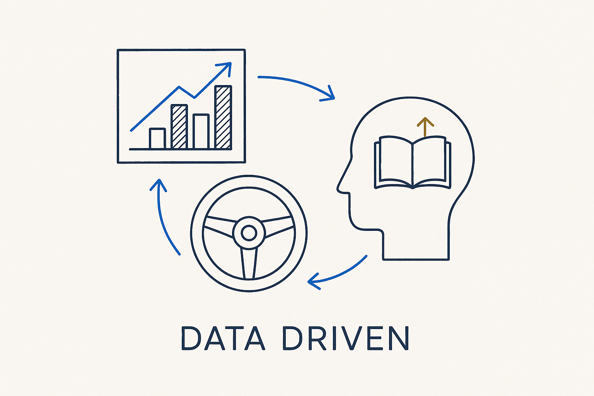

Let the data steer the decision — measure, observe, and act on what the numbers show, including for our own learning: track knowledge levels and improve on evidence.

> Let the data steer the decision — measure, observe, and act on what the numbers show, including for our own learning: track knowledge levels and improve on evidence.
Data-driven is the practice of letting measurement steer the decision rather than intuition. You instrument the thing, watch what the numbers actually do, and act on that — which sources fail most, where the model drifts, which contracts are chronically late. It is the operating mode that observability, accountability and reality checks all depend on: none of them mean anything unless someone is willing to be moved by what the data says, even when it contradicts the plan.
The important extension is that this applies to our own process, including our own learning. If continuous learning is real, it has to be data-driven too: track knowledge levels, see who has picked up the new concepts and who hasn’t, measure whether a training actually changed anything, and improve the program on that evidence — not on the feeling that “we did the workshop, so we’re good.” Dogfood it: model the learning, measure it, and let the data guide what you teach next.
Data-driven is the twin of fact-based: fact-based says only verified truth counts, data-driven says let the measurements decide. Structure makes it possible — when everything is metadata, the numbers are already there to steer by.
Where it lives: the signature principle of Breakthrough Modeling — let the measurements decide, ours included.